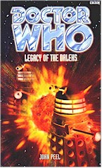

|
Legacy of the Daleks
|
BASIC PLOT DOCTOR COMPANIONS The Doctor also adds another cat (after the departure of Wolsey with Benny) to his travelling companions, not named at this point. MATERIALISATION CIRCUIT Pg 243 We don't see it happen, but it must, roughly near the same place as before, but one year later. PREPARATORY READING Knowing the basic story of The Dalek Invasion of Earth would be helpful. CONTINUITY REFERENCES Pg 3 There continues a summary of The Dalek Invasion of Earth, including a description of the Robomen. "'They left a lot of stuff behind them,' her dad explained. 'They brought... things with them. And some of them got loose.'" This includes the Slyther, which we will see in a couple of pages time. Pg 4 "Just ahead was an old house. It had mostly fallen apart owing to weather, time and neglect." There's a certain narrative continuity which suggests that this was the house occupied by the crones in The Dalek Invasion of Earth. I've no proof of this, but I'm pretty sure I'm right. Pg 5 "The roar was almost deafening. [...] It was as if two voices, in slightly different pitches, were screaming at the same instant." Ah, the instantly recognizable sound of a Slyther, from The Dalek Invasion of Earth. Pg 12 "With all the rebuilding, they're even calling it New London these days." This is consistent with the novelisation of The Five Doctors. Pg 15 "Now, if she looked out of the window, she'd see only new buildings, a pleasant walkway beside the same Thames that had held bloated bodies of resistance workers and slaughtered Robomen - and the occasional Dalek." Basically, a quick retread of Episode 1 of The Dalek Invasion of Earth, including its cliff-hanger ending. "She loved David. She had done almost from the first time she'd seen him, gun in hand, in the wreckage of the city." Episode two of same. Pg 16 "Her species - who called themselves Time Lords - and humans could interbreed at times. But this wasn't guaranteed." Leela is revealed as being pregnant with Andred's child in Lungbarrow, but there's also a reference here to the Doctor's new-found half-humanness as revealed in the Telemovie. Pg 17 "Their three children had all been Dalek war orphans, adopted and raised as their own. She had loved - and still did love - Ian, Barbara and David Junior." Susan and David appeared to have some issues with originality when they named their children; I'm sure I don't have to tell you who they're named after. See also Continuity Cock-Ups. Pg 20 "'Grandfather,' she breathed, for the thousandth time, 'why did you abandon me'" The Dalek Invasion of Earth, episode six. "He had promised to return, too, and see how she was getting along. But he never had." The Dalek Invasion of Earth, episode six. Pg 23 "He and Sam had become mixed up in the plans of the deadly Kusks on the dying planet of Hirath." Longest Day. Pg 24 "But there was always some sort of closure when they left him, a feeling that their time with him was done, that they had learnt what they must, even that their lives thereafter would be helped by the time they had spent with him." Apart from the breathtaking arrogance of this statement, one would like the whisper the following names into the Doctor's ear: Katarina, Sara, Adric and Roz. Also, arguably, Jamie and Zoe, Sarah-Jane, Tegan and Mel, probably amongst others. Pg 25 "That had been hard enough, and even harder when he'd decided to take Susan with him. He couldn't leave her behind to be brainwashed and regimented in the thought patterns of the rulers of his homeworld." No mention of the events of Lungbarrow here, but there is a general consistency with the Doctor and Susan's amnesia from Time and Relative, and the Doctor's throughout much of his first incarnation. Pg 28 "A twinge of guilt needled his mind as he realised that he'd hardly thought of her in ages, let alone visited her as he had promised so glibly. If it hadn't been for Rassilon's Game, he'd never have seen her at all in all those hundreds of years. And even then, he'd barely talked to her." The promise was from The Dalek Invasion of Earth, of course, and the rest is The Five Doctors. Pg 30 "If he found out what had caused Susan's problem, then perhaps he could prevent whatever had caused her to send that message in the first place." Except this would be a paradox, Doctor, and they're quite bad. Must be those pesky Faction Paradox people and their nasty virus that we'll find out about in Interference, part II again. Pg 51 "'There was a man involved in that!' she exclaimed [hence the exclamation mark]. 'He was called the Doctor! And he had some sort of disappearing box...' She looked around the TARDIS. 'Is this it?'" The Dalek Invasion of Earth, although only David actually saw the TARDIS vanish, and it seems unlikely he would talk about it, given that it would make it obvious that his new bride was an alien. But then, these stories get about, don't they? "Eventually that body wore out, and I needed a new one." The justification given somewhere between The Tenth Planet and The Power of the Daleks. Pg 55 "Earth's underpopulated, you said. At a guess, I'd say that everybody's into rabbit mode right about now" This is, arguably, the most unlikely phrase ever to come out of the Doctor's mouth. Pg 68 "He'd lived several lives to the full. He'd fought Daleks, Cybermen, Ice Warriors and other creatures she'd never even heard about." You know where these come from. What's impressive is he seems to have delivered his entire life story in about two hours (Pg 67). Pg 70 "The restoration of the Houses of Parliament was still progressing." This fits with the last time we saw them in Alien Bodies. Pg 75 "He fished in one of his coat pockets and pulled out a wad of cards." The Two Doctors He goes on to brandish a UNIT pass in the name of Doctor John Smith, which "doesn't even look like you" in a similar manner to his performance in Battlefield. Pg 79 "He rubbed his hands briskly together, and then used the handle of his umbrella to rap on the door." He didn't have an umbrella back in Kursaal, but as obviously acquired one since then. Pg 80 "David, my boy! So good to see you again." The Doctor slips back into the characterisation, such as it is as given here, of his first incarnation. Pg 82 "In my family, all accidents tend to major." This is probably a reference to Lungbarrow. Pg 87 "Estro managed to get out of the war room by pleading the need to go to the toilet." And the character of the Master loses his last shred of dignity. Scarily, he's been followed. Pg 100 "The last time she'd seen anything like this was back in their city, on their homeworld of Skaro." The Daleks. There follows a discussion of the use of static electricity, as well as how Daleks were powered in The Dalek Invasion of Earth. Pg 106 "She was still soggy from their examination of the wrecked runabout. David looked as soaked as she did. The Doctor, curiously enough, looked slightly rumpled, but almost dry." It's unlikely, I'll admit, but it's possible that this is what the Doctor was doing in that infamous scene in The Curse of Fenric, where it's only raining when the camera's on Ace, but not when it's on the Doctor. Wow, the man has such charisma that even the rain daren't touch him. Pg 107 On falling in love with humans: "'It's an unpleasant problem,' the Doctor said sadly. 'But it's one that my family seems prone to.'" This may be a reference to him and Grace, or to his father and mother, both from the Telemovie. And latterly, to him and Rose. Note that there is absolutely no implication here that, as Alien Bodies implies, he's only half-human in this incarnation. Pg 109 "'It's Draconian technology,' the Doctor said darkly." Frontier in Space, which is, incidentally, when the Master picked it up. It's infrared detectors, so obviously that would've been much harder to come by on, say, Earth. Pg 110 "It took the one looking over the Doctor quite some time to empty all his copious pockets." This has been the case for years. A great example can be found in Burning Heart. Pg 111 "'Foreman,' she replied, and then wondered why she had given the name Grandfather had adopted for her on Earth in the 1960s." An Unearthly Child. Pg 133 "The Doctor took her hand in his. 'Brave heart,' he murmured." He used to say this to Tegan a lot too. On DA-17: "It was so similar to the one in which she'd been trapped on the Dalek homeworld of Skaro." The Daleks. Pg 138 "'Doktoro,' said a fresh voice, one that Donna had never heard before. 'Mi gojas ke vi estas tiu kiun mi bezonis por kompletigi la ludon.' The Doctor spun around to stare at the newcomer. 'Tiam kiam mi audis la nomon "Estro", mi opiniis ke tiu devas esti vi. Via vanteco estos la fino de vi, estro de malbonestroj.'" It's Esperanto. Heaven knows why. Given that we don't get a translation, and, given my nonexistent understanding of the language, I'd like to suggest that this roughly reads: 'Doctor, thank you so much for the begonias you gave me to decorate London.' 'My pleasure, Estro, and I'd like to invite you round for some stroganoff at some point.' I could be wrong. See also Continuity Cock-Ups. Pgs 139-140 "It's an artificial human language called Esperanto, invented in 1887 by a Polish oculist named Zamenhof. He wanted it to become the universal language of peace. Typical of the Master to corrupt it." This, another great example of dreadful dialogue writing, and gives us an educational factoid, but fails to tell us a) why they're speaking the language and b) what they said. Pg 141 "I seem to have done something naughty. My people usually have a law that we must meet each other in a linear progression along out relative time-streams. But I've slipped back in regards to the Master - I've met him in two and a half bodies since this one." See Continuity Cock-Ups, and not just for the fact that the Doctor's use of the word 'naughty' here implies he's behaving like a five-year-old. For the record, one is Ainley, the other is Roberts and the 'half' is presumably the Pratt/Beevers version, although strictly speaking that's just the decaying remnants of the Delgado version. Pg 142 "He tried to start a war between Earth and Draconia in the future to weaken both empires." Frontier in Space. "Well, I was in their... employ, I used my time to raid their computer files. They alerted me to a few interesting facts that I'm making use of." I'm pretty sure that should read 'while' or 'when', not 'well', but I could be wrong. Whichever, isn't it interesting to note that in Frontier in Space, the Master was discovering stuff about The Dalek Invasion of Earth by looking in the Daleks' files. Meanwhile (as we discovered in War of the Daleks), in The Dalek Invasion of Earth, the Daleks were raiding Earth computer files to discover stuff about Remembrance of the Daleks. How magnificently circular! It clearly doesn't suggest a dearth of ideas on Peel's part at all. Pg 144 "But the Daleks' final transmission back to Skaro before you and your allies destroyed them..." This is the first time we get confirmation that the invading force in The Dalek Invasion of Earth were in contact with Skaro at the time, thus setting at least one part of the Dalek timeline in stone. Pg 150 "'Let's improvise,' the Doctor suggested. 'Overplanning never works. Trust me, I've been there, done that.'" The New Adventures. Except that, of course, it did work, and what the eighth Doctor tends to do, tends not to. Heigh ho. Pg 152 "'Embryos were frozen, awaiting revival,' the Dalek informed her. 'The assembly line was prepared. All that was required was power.'" As it so nearly states, this is very much taken from the imagery of The Power of the Daleks. Pg 156 "To his surprise, he wasn't dead, but he discovered that his legs were paralysed and his spine was on fire with pain." Like Ian in the Daleks. His later fate, however - Robotisation - is like Craddock's in The Dalek Invasion of Earth. Pg 164 "The only important thing was power, which he understood perfectly, and the Doctor refused to grasp. Survival of the fittest - the weak being led by the strong." A possible ironic reference to the Master's last television appearance in the old series: Survival. Pg 165 "What the Master wanted more than anything from his old friend-turned-foe." Divided Loyalties, The Dark Path. Pg 179 "Susan had never expected to see Robomen again. They were the living dead - people whose minds had been wiped of all personality and independent action." The Dalek Invasion of Earth, again. Pg 191 "It was wired into a timing device that was counting down. It was shaped like a human clock, and marked off in increments. If she assumed that each mark represented one time unit, then there was about one quarter unit left." This sounds like the timing device on the bomb at the end of Episode three of The Dalek Invasion of Earth. Pg 194 "'The Doctor?' Susan was stunned. 'He's here? On Earth?' 'You know him?' The Master's eyes narrowed. He didn't suspect how much, then. Good." The Master's lack of knowledge about Susan's origins square with what we know of them from Lungbarrow, although don't quite fit with what we learn in Time and Relative. Pg 206 There's a glorious moment of utter Dalek denial when, as every single Dalek plan is in ruins, the Black Dalek considers: "The humans would be back. They would not concede that the Daleks were superior." They've been taking realism lessons from the Master, it would appear. See also pages 216 and 220. Pg 207 "It had been thirty years since she'd held one, her own key long lost in the rubble of old London." The Dalek Invasion of Earth, episode six. Pg 213 "I'm at the top of their shoot-on-sight list." The Doctor noted that he was in the same high-polling position in War of the Daleks as well. Pg 217 "For a second he wished he could see the bigger picture again, the grand design, as he dreamed he once could. But there was only darkness and pain crowding his head, now." Misplaced comma, I think, but, finally, a decent piece of prose, and a rather nice reference to the NA Seventh Doctor. Pg 220 "Flames and molten rocks oozed from the devastated ground. Fire was everywhere. It was as if the gates of Hell had been opened, and the internal fires loosed." The destruction of DA-17 is visually very similar to the destruction of the Dalek mine-workings in - surprise, surprise - The Dalek Invasion of Earth. And wouldn't it have been nicer if this had read 'infernal' rather than 'internal'? Pg 224 "Susan had known for a long time that she had greater latent telepathic powers even than most of her people." The Sensorites. Pg 229 "Their excuse was that, given his alien metabolism, anything humans considered medicine might well be lethal to him." Good on those surgeons! The Left-Handed Hummingbird established that an aspirin would be fatal to our favourite Time Lord. Pg 233 "His recovery was almost complete - his healing trance had done the trick, of course." As seen in Planet of the Daleks and Genocide. "Thankfully this time no overhelpful medical technician had tried to help him recover." The Telemovie. Pg 234 "No positive match." Sam's not on Earth. There's a shock. Pg 235 "Tersurus" The Doctor finally remembers what he learned in The Deadly Assassin. But we're about to get a prologue... Pg 236 "There'd be only himself to look out for, just as when he'd gone off before, soon after they'd first met." The three-year gap, as established in Vampire Science. Of course, it's a blatant lie that he only had himself to look out for as Placebo Effect establishes that he spent at least some time with Izzy and Ssard. Let's be charitable and assume that that was his intention at the beginning. "TARDIS-fodder..." This is a quote from Alien Bodies. Pg 239 "She [Rodan] wasn't going to mess it up. If she did, she'd be sent to some mindless, menial job like watching the transduction barriers, or timing paint drying..." Sadly, she messes up, since the next time we see her, in The Invasion of Time, she's watching the transduction barriers. Pgs 239-240 On the President: "The senile old fool was due to resign shortly." There follows, in very basic detail, an extremely unsubtle set-up for The Deadly Assassin. Pg 245 "'[The Daleks] won't be your problem.' He gazed into the distance. 'I wish I could say that they won't be mine, but I know better.'" This, uncannily, predicts the Time War of the new series. (...and this is the book John Peel claimed had no continuity!) OLD FRIENDS AND OLD ENEMIES The Master. Briefly, on Gallifrey: Rodan, Chancellor Goth and we hear about the President that the Doctor didn't shoot in The Deadly Assassin. NEW FRIENDS AND NEW ENEMIES Donna. Barlow, O'Hanley, Portney, Malone and Craddock are all that remain of Haldoran's council. It's possible that Craddock is related to Ian's friend Craddock who got turned into a Roboman in The Dalek Invasion of Earth. Other combatants include Broadhurst, McAndrew, Durgan and Arkwright. Briefly, on Gallifrey, a technician. There's a huge chorus of expendable and dying soldiers. Action by Havoc.
CONTINUITY COCK-UPS PLUGGING THE HOLES [Fan-wank theorizing of how to fix continuity cock-ups] FEATURED ALIEN RACES FEATURED LOCATIONS Pg 2 Some woods in Surrey. Pg 9 Castle Haldoran, formerly Leeds Castle, Kent. Pg 15 Susan and David's home, New London. Pg 34 The road to London. Pg 47 DA-17, on the border between Domains London and Haldoran. Pg 69 New London. Pg 72 Domain London HQ was formerly the Tower of London. Pg 88 Battle on the streets of Woolwich. Pg 197 A mineshaft near DA-17 Pg 223 Tersurus, the far future. Pg 229 A hospital complex in the Tower of London, back in 2200AD. Pg 239 Gallifrey. Pg 241 Goth arrives on Tersurus. Pg 243 Becca's farm, one year later than the bulk of the action. IN SUMMARY - Anthony Wilson |
|
 |